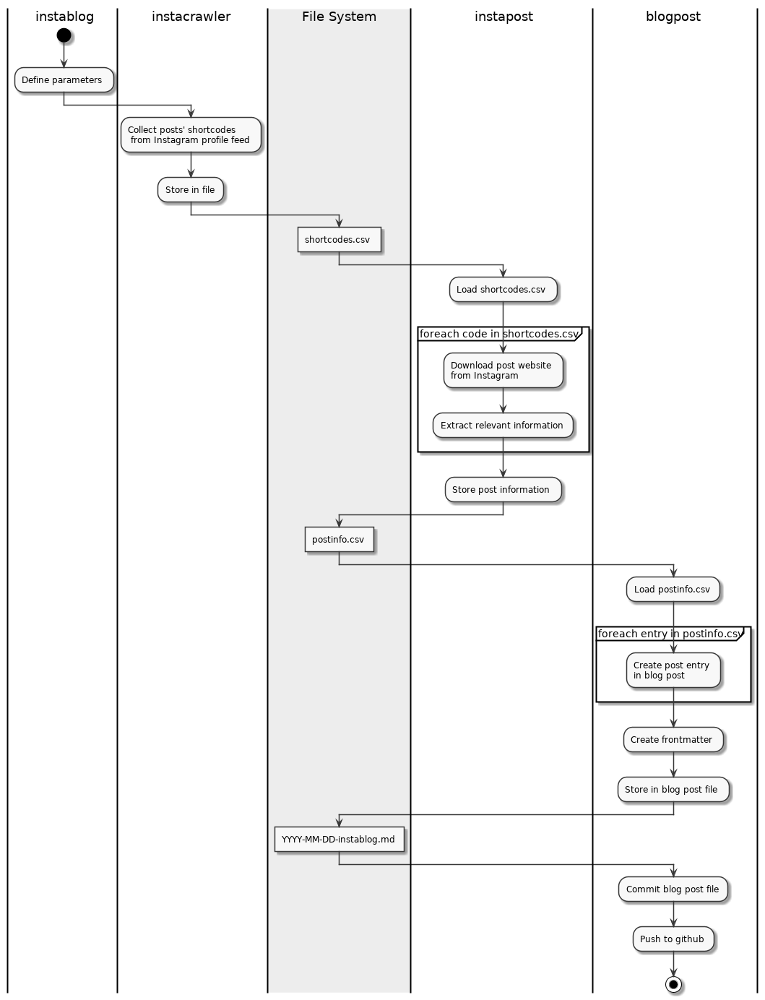

About
In August 2019, the team DramaLamas will take part in the charity rallye BALKAN EXPRESS RALLY. We want to document our trip using Instagram as well as on our blog.
Important websites
- Team website DramaLamas: dramalamas.tours
- Team’s Instagram profile: dramalamas.tours2019
Project Definition
Existing solutions sharing instagram posts within a blog explicitly embedd an post URL. This is a manual effort one has to do for every new instagram post entry. The Instagram JavaScript plugin, Instafeed.js, utilizes Instagram’s API and retrieves new posts filtered by a user-defined function. As a result, a single blog post embedding this javascript would display a large list of Instagram post. However, it is unclear how a daily blog is generated which only contains the posts from that day.
Goal
New posts on our Instagram account shall automaically appear as daily blog posts on our website.
Approach & Objectives
- To setup a github project framework and development environment
- To include a project blog for documentation
- To enable automatic download of new instagram posts filtered by a given date
- To enable the automatic creation of blog posts from instagram posts of that date
- To let the blog post have a URL reference back to the genuine instagram post
- To enable the software to monitor and run the blog post creation on a regular basis, e.g. at a hourly interval
- To be able to single-click deploy the software on a Virtual Private Server
- Optionally: To enable a simple remote monitoring notifying the regular successful or failed run
Valueable Contributions
Instablog has some features, where it may have an advantage over alternative solutions.
- Keeps track of the complete feed history
- Highly modular and easy to extend because of a file system based interface using
.csvfiles
However, instablog requires a Linux server to run. One may think to parasitically run instablog on Travis.
Alternative Solutions
Other options of Instagram-Blog-crossposting include
- Instafeed.js
- Pro: easy to embedd into a single blog post
- Con: Still requires to manually create a blog post, filtering for a single date unclear
- RSS feeds, e.g. RSS Hub or RSS.app
- Pro: Structured data returned, easy to parse by a wide range of software
- Con: Still requires to manually create a daily blog post
- Open Source, e.g. Syncing Instagram posts to a Ghost blog
- Pro: existing code base, quick start for own projects
- Con: limited to specific blog system, still requires customization effort
MVP
The minimum viable product creates the initial value.
All Instagram posts of a selected single date shall be listed in a day’s blog post on DramaLamas.tours. The blog post shall display the correct date. It shall contain for each Instagram post at least
- caption
- date and time
- image
- link from the image to Instagram post
Note: Instablog sources a profile’s feed. Since the Instagram website shows only up 12 recent posts in a feed, the blog post is limited to those recent posts.
Acceptance test
The MVP is accepted if the functionality above is shown for at least two different dates.
Design Concept
This is a brief design sketch of Instablog’s components.
- instacrawler: collect URLs from Instagram’s profile
- instapost: download a single Instagram post’s data
- blogpost: create a blogpost from all Instagram posts of a single day

The DramaLamas blog is a jekyll website hosted on GitHub. Updating the blog is a git commit activity.
Components
instacrawler
Instacrawler collects URLs of posts from an Instagram’s profile feed. It identifies posts by their short code - an alphanumeric string, such as BhRpkfqgnsf.
The software component consists of two parts.
instacrawler.shDefines the profile URL and the file storing posts’ shortcodes as.csvfile. Afterwards, it calls the python script to do the work.instacrawler.pyDownloads the profile website, extracts the shortcodes and stores them in.csvfile.
Invoke instacrawler: The entry point is always the shell script.
./instacrawler.sh /tmp https://www.instagram.com/koloot.design/
This will let the instacrawler download the profile’s feed of koloot.design and store all found posts as shortcodes in the /tmp/shortcodes.csv. Note, the filename is defined within the script in order to hide the components’ data sharing via the filesystem from the user.
Note: Instagram shows only up 12 recent posts in a profile’s feed. The number of shortcodes is therefore limited to 12 recent posts.
instapost
Instapost downloads Instagram post information. A shortcode, e.g. BhRpkfqgnsf, acquired from Instacrawler refers to a single post’s URL in the form of https://instagram.com/p/BhRpkfqgnsf.
The software component consists of two parts.
instapost.shDefines the file storing relevant Instagram post information as.csvfile. Afterwards, it calls the python script to do the work.instapost.pyDownloads post for each shortcode in the shortcode file and extracts relevant information and stores it in a.csvfile.
Invoke instapost: The entry point is always the shell script.
./instapost.sh /tmp
Only a data directory, here /tmp, needs to be defined. The script assumes all data files to stay in this data directory. The input shortcode file is assumed to be shortcodes.csv. The output file storing the relevant post information is postinfo.csv.
blogpost
Blogpost creates a blog post from the Instagram posts information. This component is specific for the blog where the post appears. The component’s code is specific for the dramalamas.tours blog and its jekyllDecent theme.
The software component consists of two parts.
blogpost.shDefines the Instagram post information source file as well as the filepath to the blogpost file. Addtionally, it requires the blog date. Afterwards, it calls the python script to do the work.blogpost.pyFilters the post information file for the blog date and creates the blogpost file formatted to be compliant with the jekyllDecent theme.
Invoke blogpost: The entry point is always the shell script.
./blogpost.sh /tmp 2019-08-16 https://github.com/<user>/<repo>.git
The /tmp directory serves a dataroot. Filenames are set by convention through the script. The blog date must be in format YYYY-MM-DD. A successful script run will generate 2019-08-16-instablog.md file the /tmp directory when called with the parameters from above. At the end the scripts uploads the newly created file to the github repository specified the last parameter.
blogpost: Layout
The blogpost component, to be specific the blogpost.py script, determines the the blogpost’s layout. This includes frontmatter information, such as title and cover image as well as post content like image alignment and captions.
Title
The blogpost component enumerates blog posts by the day in relation to a reference date. In our case, the reference date is the tour start. As a result, titles refer to the tour day.
Cover Image
This is also part of the post’s frontmatter. From all Instagram images selected for this post the script chooses one by random to declare it as the cover image.
Image Alignment and Captions
The dramalamas.tours blog theme aligns images in the following ways.
- fullscreen: images takes the complete browser window width
- regular: images takes the text block width
- left or right: stamped-size left and right alignment
- album: images aligned in a banner to be scrolling left/right
The theme’s example site provides a nice overview. All images can be zoomed in to browser size or even on the entire screen size by clicking on it.
The blogpost.py script implements a couple of heuristics to align images according the options listed above. The selection mainly depends on
- the number of images selected for this blogpost
- the length of the images’ captions
The following thresholds define the behavior.
post_count_threshold = 2
caption_len_threshold = 25
caption_huge_threshold = 200
album_threshold = 8
album_img_count = 4
Blog Post with Few Images
If the number of selected entries is less or equal than post_count_threshold, we speak about a blog post with only a few images.
fullscreen. A single image is always aligned as a fullscreen image.
regular. If there are less or equal than post_count_threshold images, they are aligned as regular images.
caption or paragraph. If an entry’s caption is less or equal caption_len_threshold, an image is described by a caption. Otherwise, a separate paragraph below the image will include the caption.
Blog Post with Many Images
If the number of selected entries exceeds the post_count_threshold, we speak about a blog post with many images.
regular. For short image captions, i.e. if an entry’s caption is less or equal than caption_huge_threshold, the image will be aligned as regular with a caption.
leftright. Otherwise, if there is long image caption, i.e. if an entry’s caption is greater than caption_huge_threshold, the image will be aligned alternatingly as left or right image. A separate paragraph will hold the the caption.
album. If we find many regular aligned images, i.e. more than album_threshold, we realign regular images as album images. Remember that regular aligned images always correspond with captions as their description. An album will not change it. Each album image includes an image caption. The size of the album is controlled by album_img_count parameter. The album consists of album_img_count images and the next images is a regular aligned one again.
instablog: Main Script
instablog
The main script for automatically creating daily blog posts from Instagram posts. This script may run as a cronjob.
instablog.sh Defines basic interface parameters:
- data directory: storing all intermediate data for the exchange between instablog’s other software components.
- profile URL: the Instagram profile URL sourcing the feed data from
- github repo URL: the URL to the github repo providing the jekyll blog
Default values: If no params are provided, instablog will fall back to default values; see instablog.sh.
Invoke instablog:
$ ./instablog.sh --help
Usage: ./instablog.sh <options>
Options:
-h | --help This message
[-r | --dataroot] directory to exchange data betw. components
[-p | --profile] Instagram profile URL
[-g | --github] Github blog URL
[-d | --postdate] blog post date, format: yyyy-mm-dd
Default DATAROOT: /tmp
Default PROFILE_URL: https://www.instagram.com/koloot.design/
Default POST_DATE: 2019-08-15
There is no default value for the github blog URL. If you leave this option out, it will not update the remote blog. Credentials to update the github repo are stored in an external .env file.
The following activity diagram displays the workflow of all instablog components.

Feed History and the “Recent Posts” Limit
The Instagram profile feed is limited to recent posts only, which Instagram defines to be 12 posts. We discuss three options to overcome this limit.
Option 1: RSS feeds
Typical RSS feed solution, e.g. RSS Hub or RSS.app, have basically the same as the instacrawler component. The source all recent posts from a profile and provide an RSS output format containing posts’ information. The limit still remains.
Option 2: Instagram explore
Explore brings up posts matching a tag. The tag #iceland brings up a page with lots of posts associated with this tag. Just have a look on https://www.instagram.com/explore/tags/iceland/. Interestingly, the page data refers to 76 individual posts. The instacrawler component can successfully process the explore URL, extracts and stores all 70+ shortcodes. It means, however, that all user specific Instagram posts must be specifically tagged to separate them posts from others. Still, we can’t avoid free riding. When others would use this tag, their posts would make it into our blog.
Option 3: State-based Crawler
This idea is simple and effective. After each run of the instacrawler component, it simply adds the current posts to the ones from the previous run. Run after run, it builds up history of posts. The frequency of the crawler’s runs depends on how often we would post new images on Instagram. The recent post limit is only valid for a single website lookup. If the crawler runs frequently enough, the risk is low it would miss any post.
Option 3 is easy to implement. The instablog main script records the results file, that is the shortcodes.csv file, of each instacrawler run throughout the day. It merges the current file with all the last ones, removes duplicates and provides the results to the instapost script for the next step.
One thing left. Option 3 only works from the day on when instablog starts. It can’t restore a feed history from the past. When instablog starts the regular operation from the first time, it initializes the feed history. Subsequently, it must frequently run with no longer breaks to keep up with the feed history.
Deployment and Execution
The software shall run on a Linux Server. The server deployment and execution scripts are contained in https://github.com/cdeck3r/instablog/tree/master/deploy.
Initial Installation
We assume, the instablog installation resides in $HOME/instablog. Initially, clone the instablog repo when in $HOME. This will create the instablog directory.
cd $HOME
git clone https://github.com/cdeck3r/instablog.git
cd instablog
Update
After the initial installation further updates or changes can be installed. Run the update script as follows.
$HOME/instablog/deploy/update_instablog.sh
It will update the instablog installation from the Github repo.
Note: The update script assumes $HOME/instablog as the installation directory.
Run instablog
You may run the instablog main script from the command line or using a wrapper script in a periodic cronjob.
Run from Command Line
First, change into the instablog installation directory.
cd $HOME/instablog
Then create the virtualenv venv and activtate it.
make venv
source venv/bin/activate
Now, run the instablog main script after defining some variables used as script’s parameters.
DATAROOT = ...
PROFILE_URL = ...
GITHUB_URL = ...
cd scripts
./instablog.sh -r "$DATAROOT" -p "$PROFILE_URL" -g "$GITHUB_URL"
Finally, at the end, deactivate the venv again.
cd $HOME/instablog
deactivate
Run instablog as a cronjob
The wrapper script may be used as entry script for a cronjob. Install a cronjob calling the following script.
$HOME/instablog/deploy/cron_instablog.sh
The cron_instablog.sh activates the venv, defines the data directory and the URLs for the Instagram profile and the Github blog. It runs instablog.sh script and at the end, the script deactivates the venv.
You install provided the cronjob example instablog.crontab
crontab instablog.crontab
crontab -l
The last line verifies that the cronjob got installed. The example schedules the script once an hour at minute 58. So, it runs 0:58, 1:58, 2:58, …
Conclusion
This section concludes the project.
Summary
The list below displays the achieved objectives:
[ ] Optionally: To enable a simple remote monitoring notifying the regular successful or failed run
Conclusion
Instablog autonomously monitors our Instagram profile for new posts and creates a blog post containing on instagram post from a single day.
Final Note
I took this exercise as an test case how fast I develop a small end-to-end software. In particular, this encompasses the use of Docker, Makefile, various scripting languages, version control, parallel documentation and many other development activities.
Instablog runs unattended on a server on the Internet. The software is split into different small components. It is kept intentionelly lean by using the filesystem as middleware between components. I utilized the approach of convention over configuration, not only to speed up development, but to achieve resilience, too.
Still, lot’s of things are missing. The shell scripts do not check for parameters when invoked. There are no unit tests at all. It is unclear what happens, if the scripts meet a video or other content other than images. The python code requires improvement. There are lots of for loops and if/then statements instead of map or apply and switch/case statements. The Instagram images link to a content delivery network (CDN). It is unclear, wether the links will stay constant over time. An enhancement option is to download the images and store them for the blog.